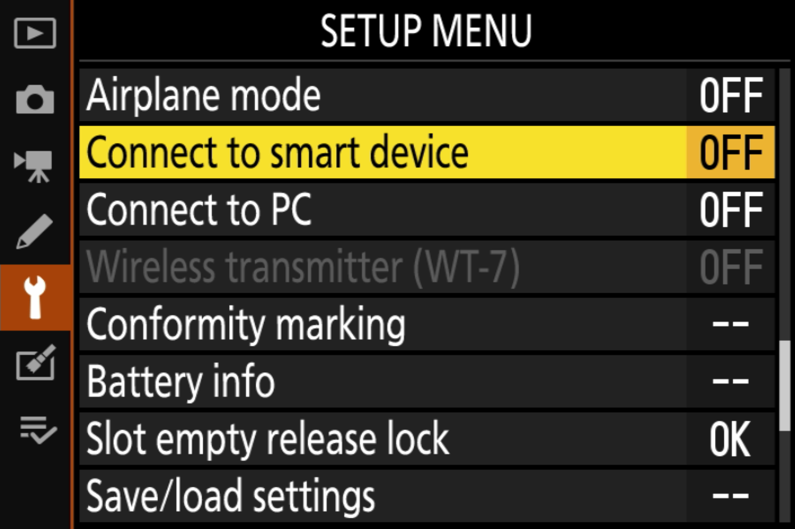
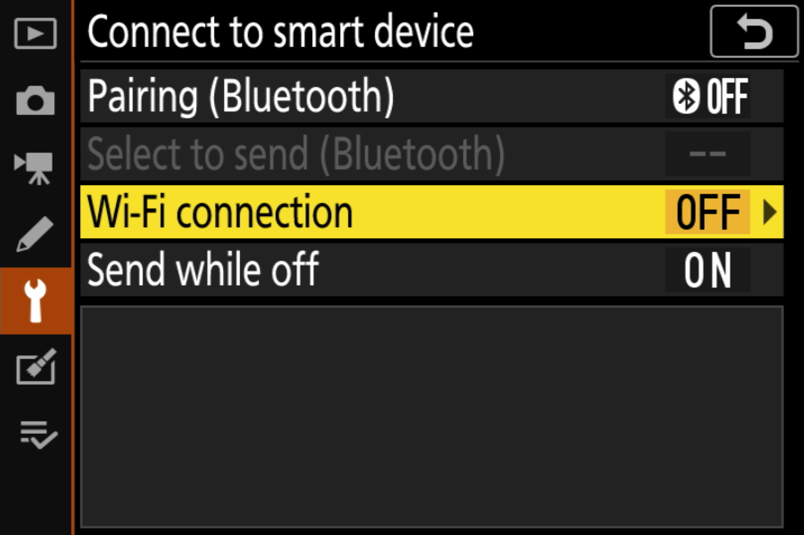
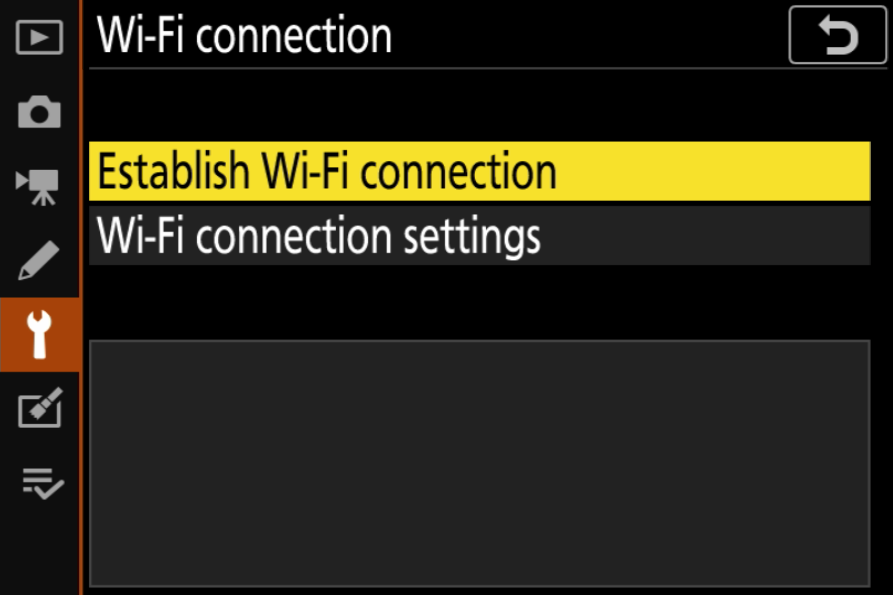
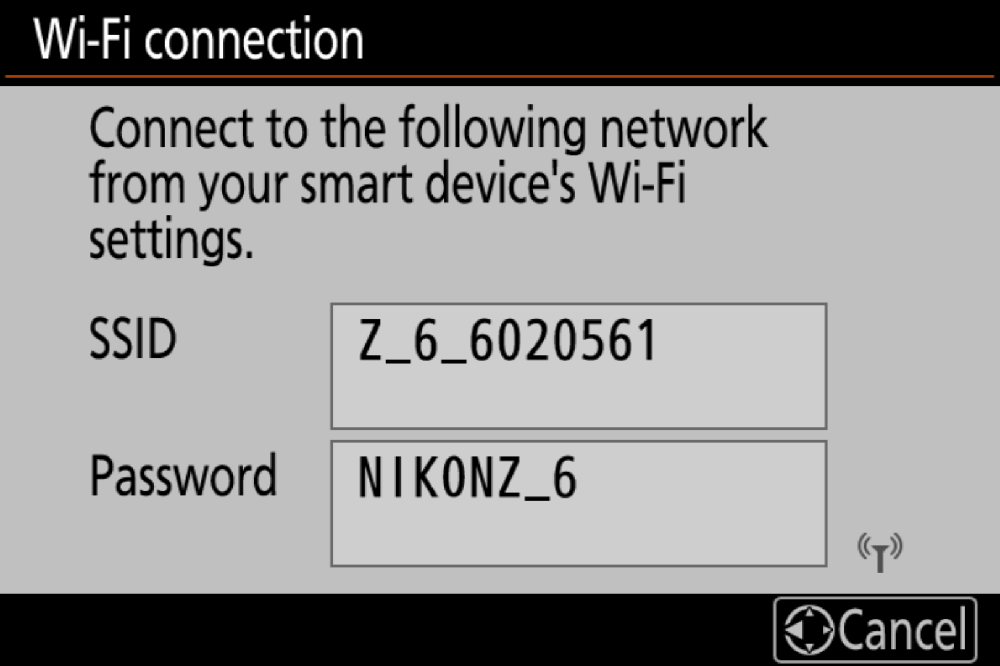
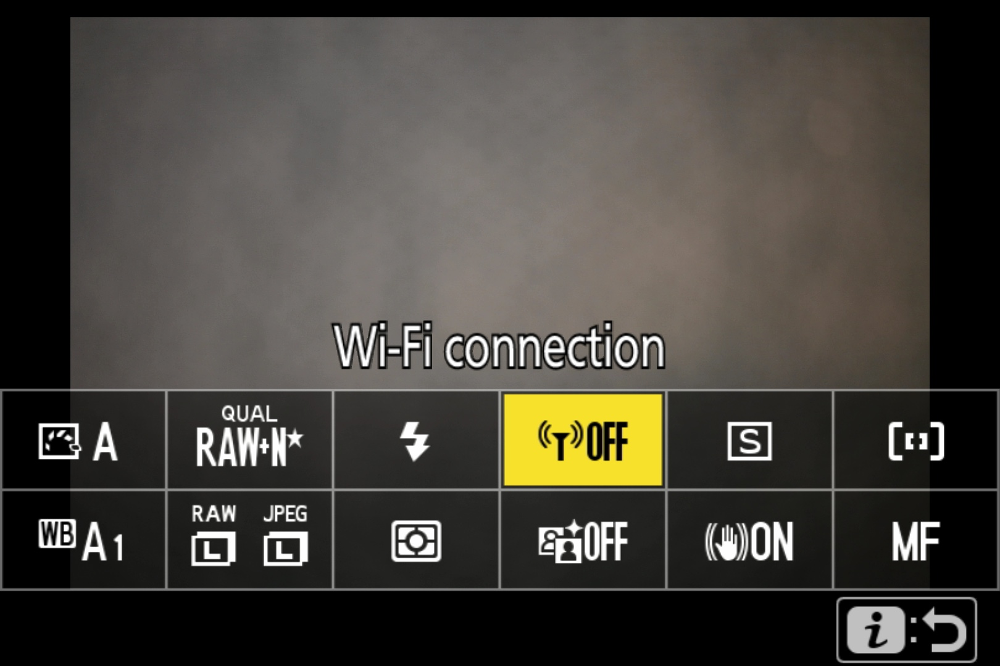
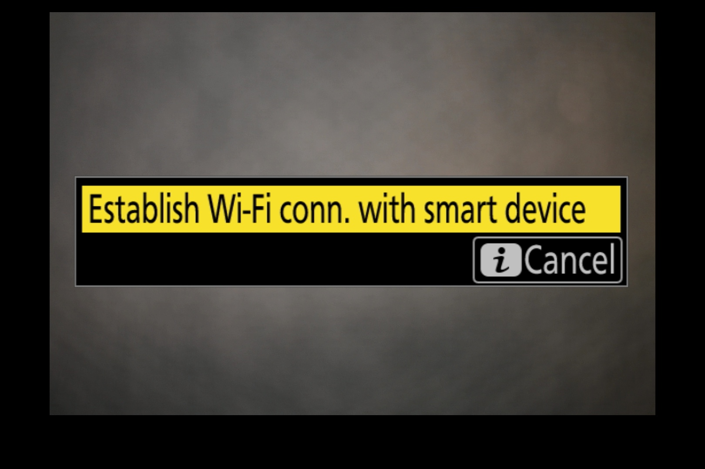

Important! This guide is for Nikon cameras that include SnapBridge, including the Z6 and Z7 models. If your camera was introduced before SnapBridge, you must follow our Nikon (Without SnapBridge) connection guide.
Before We Start
- Make sure your camera is supported by Cascable.
- Check that your camera's firmware is up-to-date.
- Check that Cascable is up-to-date.
Initial Camera Setup
- Press the Menu button on your camera and navigate to Connect to smart device in the Setup menu.

- Select Wi-Fi connection within the Connect to smart device menu, then choose Establish Wi-Fi connection. If you'd like to customise the SSID and password of the Wi-Fi network your camera creates, you can choose Wi-Fi connection settings.


- Your camera will show the SSID and password of the WiFi network to connect your iOS device to.
- Open Settings on your iOS device and navigate to Wi-Fi, then connect to the WiFi network displayed on your camera.

- Launch Cascable on your iOS device. It should automatically detect and connect to your camera.
Quick Connection (Once Setup Has Been Completed)
Once initial setup has been completed, you can quickly start the Wi-Fi connection on your camera without digging through menus again.
- Press the i button on your camera and choose Wi-Fi connection.

- Choose Establish Wi-Fi conn. with smart device.

- Your camera will show the SSID and password of the WiFi network to connect your iOS device to.
- Open Settings on your iOS device and navigate to Wi-Fi, then connect to the WiFi network displayed on your camera.
- Launch Cascable on your iOS device. It should automatically detect and connect to your camera.
Still Stuck?
If you're still stuck, head over to the Cascable Website and we'll help you out.